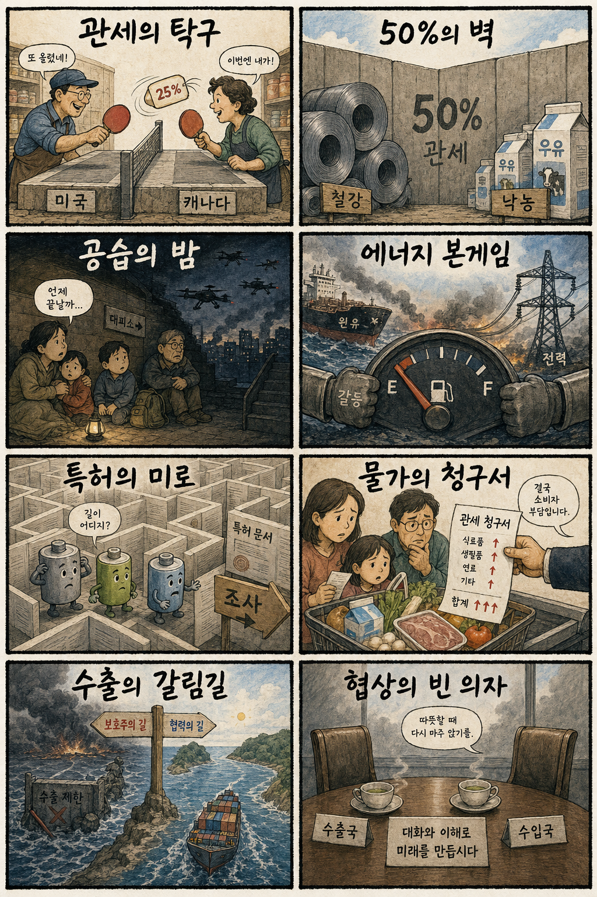
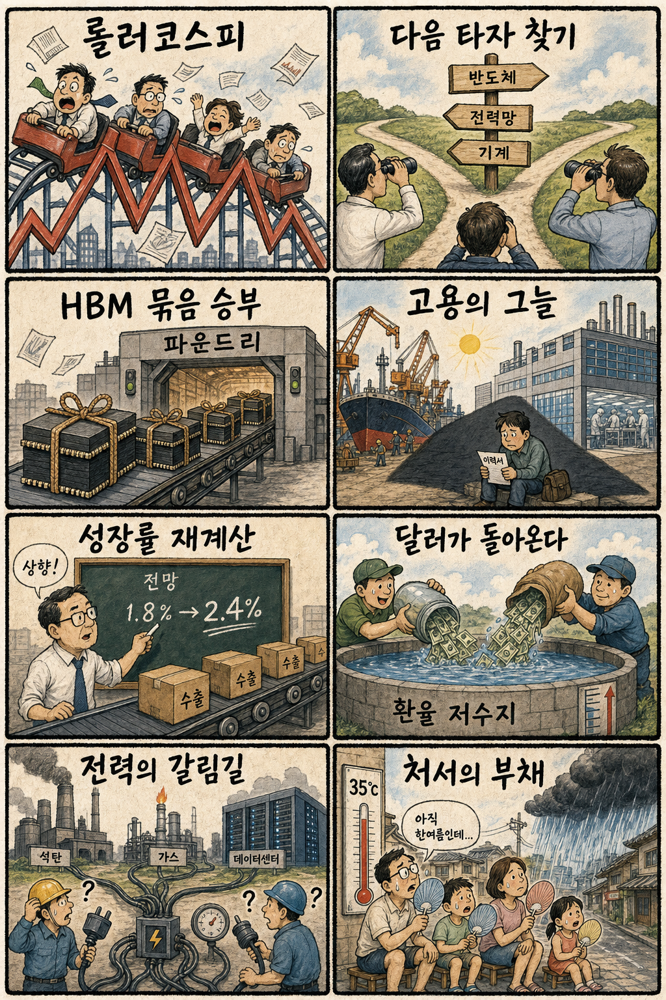

01
마벨 · 252.39→237.04달러 · -6.08%
내용요약 맞춤형 AI 반도체 설계주 마벨이 시가 대비 6.08% 급락해 조사 대상 중 낙폭이 가장 컸습니다.
예상여파 국내 AI 반도체 설계·패키징 연결주에는 월요일 단기 심리 부담이 될 수 있습니다.
MORNING_BRIEFING_20260823
작성 시각: 2026-08-23 06:39 KST · 직전 미국 정규장과 2026-08-23 KST 당일 공개 기사 기준
직전 미국 정규장인 8월 21일에는 저가매수 유입으로 다우 +0.98%, S&P 500 +0.43%, 나스닥 +0.44%를 기록했습니다. 테슬라와 팔란티어는 시가 대비 각각 +3.75%, +3.43%였지만 마벨 -6.08%, 인텔 -2.91%, 어플라이드 머티리얼즈 -2.22%로 반도체는 약했습니다. 오늘은 일요일로 한국 증시가 휴장하며, 월요일에는 미국 지수 반등보다 반도체 내부 차별화와 주말 관세·에너지 뉴스를 함께 반영할 가능성이 큽니다.
| 지수 | 종가 | 등락률 | 한국 증시 시사점 |
|---|---|---|---|
| 다우존스 | 53,277.01 | +0.98% | 경기민감 심리 회복 |
| S&P 500 | 7,674.37 | +0.43% | 저가매수 유입 |
| 나스닥 종합 | 26,180.46 | +0.44% | 지수 반등·반도체 혼조 |
직전 정규장은 +0.43~+0.98% 올랐습니다.
마벨·인텔·장비주는 지수 반등에서 소외됐습니다.
미·캐나다 관세 충돌과 에너지 공급망 위험을 봅니다.
국내 증시 휴장으로 신규 진입 후보를 내지 않습니다.
8월 22일 보고서는 토요일 국내 증시 휴장으로 공식 추천을 내지 않았습니다. 게시 당시 판단은 그대로 유지되며 사후 종목을 추가하지 않습니다.
| 시장 | 종가 | 등락률 | 해석 |
|---|---|---|---|
| KOSPI | 6,912.95 | +0.88% | 21일 시가 대비 +2.26% |
| KOSDAQ | 801.94 | -4.63% | 21일 시가 대비 -2.68% |
| 다우존스 | 53,277.01 | +0.98% | 경기민감 반등 |
| S&P 500 | 7,674.37 | +0.43% | 저가매수 유입 |
| 나스닥 | 26,180.46 | +0.44% | 반도체는 혼조 |
테슬라는 직전 장 시가 대비 +3.75%였습니다.
팔란티어는 시가 대비 +3.43%였습니다.
마벨 -6.08%, 엔비디아 -1.69%였습니다.
어플라이드 머티리얼즈는 -2.22%였습니다.
내용요약 맞춤형 AI 반도체 설계주 마벨이 시가 대비 6.08% 급락해 조사 대상 중 낙폭이 가장 컸습니다.
예상여파 국내 AI 반도체 설계·패키징 연결주에는 월요일 단기 심리 부담이 될 수 있습니다.
내용요약 전일 약세 뒤 저가매수가 유입되며 시가 대비 3.75% 반등했습니다.
예상여파 미국 성장주 위험선호 회복 신호지만 국내 2차전지는 KOSDAQ 수급을 별도로 봐야 합니다.
내용요약 AI 소프트웨어 수요 기대 속에서 시가 대비 3.43% 상승했습니다.
예상여파 국내 AI 소프트웨어 심리에는 긍정적이나 실적 검증 없는 추격은 피해야 합니다.
내용요약 미국 지수 반등에도 시가 대비 2.91% 하락하며 반도체 약세가 이어졌습니다.
예상여파 반도체 내부의 실적·공정 경쟁력 차별화가 국내 대형주와 소부장에도 영향을 줄 수 있습니다.
내용요약 반도체 장비주가 시가 대비 2.22% 하락해 나스닥 반등에서 소외됐습니다.
예상여파 국내 장비주는 실제 수주와 다음 주 주요 실적을 확인하기 전 기대만으로 추격하지 않는 편이 안전합니다.
오늘은 일요일로 국내 증시가 휴장합니다. 월요일에는 미국 3대 지수 반등이 위험선호의 완충재가 될 수 있지만 마벨·인텔·반도체 장비주의 약세는 소부장 추격에 부담입니다. 미·캐나다 보복관세와 에너지 공급망 위험은 철강·자동차·운송·화학의 비용 변수로 작용할 수 있습니다. 국내에서는 금요일 KOSPI +0.88%와 KOSDAQ -4.63%의 격차가 컸던 만큼 시초가 갭보다 외국인 현·선물 수급과 KOSDAQ 안정 여부를 먼저 확인합니다.
오늘은 추천 없음 — 현금 관망
일요일 국내 증시 휴장으로 당일 시가 진입 기준을 세울 수 없습니다. 전일까지의 수급·컨센서스·30건 이상 유사 조건 확률 보정·예상 손익비 1.5 이상을 동시에 검증할 신규 후보도 없어 종합점수와 확률을 임의로 만들지 않습니다.
관심 연결종목 대형 반도체, 전력기기, 배터리, 철강은 월요일 관찰 대상일 뿐 매수 추천이 아닙니다. 주말 뉴스만으로 장전 급등이 예상되는 종목은 추격매수 금지입니다.
신규 매수 대신 월요일 갭 위험과 주문 계획을 점검합니다.
반도체 기대와 과열, 고객사 가이던스를 함께 봅니다.
철강·자동차·식품 공급망의 비용 전이를 확인합니다.
온열질환과 국지성 강우에 동시에 대비합니다.
핵심 요약: AI 인프라 경쟁은 데이터센터 건설과 전력기기, HBM·파운드리 결합 전략으로 확산되고 있습니다. 동시에 범용 메모리 공급 부족과 AI 안전법 강화 논의가 비용·규제의 새 변수로 떠올랐습니다.
내용요약 건설업계가 AI 데이터센터를 새 성장 분야로 보고 설계·시공·운영 기술 확보 경쟁에 나섰다는 산업 보도입니다.
예상여파 데이터센터 투자가 건설·냉각·전력설비로 확산되지만 수주 잔고와 실제 가동률이 기업별 성과를 가를 수 있습니다.
내용요약 AI 인프라 투자에서 전력기기와 메모리의 시장 평가가 엇갈리는 이유를 수요 가시성과 공급 구조에서 짚은 기사입니다.
예상여파 AI 투자 수혜가 한 업종에 고르게 퍼지지 않아 전력망 증설 수주와 메모리 가격·재고를 따로 확인해야 합니다.
내용요약 삼성전자가 HBM과 파운드리를 함께 제안해 첨단 고객 수주 경쟁을 강화한다는 보도입니다.
예상여파 고객 인증과 수율이 확인되면 국내 반도체 생태계에 긍정적이지만 기대 선반영 구간의 변동성은 커질 수 있습니다.
내용요약 HBM 중심 생산 전환으로 범용 DDR4 공급이 줄어 3분기 가격이 크게 오를 수 있다는 시장 전망입니다.
예상여파 메모리 업체 수익성에는 긍정적일 수 있으나 서버·PC 제조사의 원가 부담과 세대 전환 속도도 높아질 수 있습니다.
내용요약 오픈AI가 캘리포니아 AI 안전법안에 고위험 모델 감시와 관리 장치를 더 강화하자는 의견을 냈다는 보도입니다.
예상여파 최첨단 모델의 평가·보고 의무가 커지면 개발 비용은 늘지만 안전 검증 산업과 제도 신뢰에는 긍정적일 수 있습니다.
핵심 요약: 미국과 캐나다의 보복관세 충돌이 북미 공급망을 흔드는 가운데 러시아·우크라이나 공습과 에너지 위험이 이어지고 있습니다. 배터리 특허 조사까지 더해져 무역·안보·기술 규제가 동시에 강화되는 흐름입니다.
내용요약 미국과 캐나다가 철강·낙농품 등을 둘러싸고 보복관세 대응에 나서며 무역 갈등이 다시 커졌다는 보도입니다.
예상여파 북미 공급망의 가격과 주문 불확실성이 높아져 자동차·철강·식품 기업의 비용 전가 여부가 중요해질 수 있습니다.
내용요약 미국이 캐나다산 상품에 고율 관세를 적용하고 캐나다가 맞대응을 예고한 협상 결렬 후폭풍을 다룬 기사입니다.
예상여파 관세가 장기화하면 양국 소비자물가와 제조업 투자에 부담이 되고 다른 교역국의 우회 수출 기회와 규제도 함께 늘 수 있습니다.
내용요약 우크라이나와 러시아의 상호 공습이 격화되며 민간인 피해가 이어지고 있다는 국제 보도입니다.
예상여파 휴전 협상 여건이 악화하고 방공·에너지 인프라 부담이 커져 유럽의 지원 비용과 원자재 변동성이 높아질 수 있습니다.
내용요약 미국과 이란의 충돌이 에너지 공급망 위험으로 번지는 가운데 중국의 수출 정책이 변수로 떠올랐다는 분석입니다.
예상여파 원유·가스·전력 장비 공급 차질이 커지면 에너지 수입국 물가와 운송비, 제조 원가가 함께 압박받을 수 있습니다.
내용요약 미국 국제무역위원회가 LG에너지솔루션 제소를 계기로 중국 배터리 기업의 특허 침해 여부를 정식 조사한다는 보도입니다.
예상여파 조사 결과에 따라 북미 배터리 공급망과 수입 규제가 달라지고 한국 기업의 지식재산 전략 중요성이 커질 수 있습니다.

핵심 요약: 국내 증시는 급락과 급반등을 오간 뒤 반도체 실적 기대와 금리 부담을 함께 마주하고 있습니다. 수출 성장률 전망은 높아졌지만 고용의 질과 업종 격차, 전력 전환, 처서 폭염은 별도 관리가 필요한 변수입니다.
내용요약 미국 금리 충격과 국내 대형주 주주환원 기대가 교차하며 KOSPI가 급락과 급반등을 오간 한 주를 정리한 기사입니다.
예상여파 변동성 확대 국면에서는 지수 반등만 좇기보다 외국인 수급과 KOSDAQ 안정, 종목별 실적을 구분할 필요가 있습니다.
내용요약 삼성전자가 HBM과 파운드리를 함께 제안해 첨단 고객 수주 경쟁을 강화한다는 보도입니다.
예상여파 고객 인증과 수율이 확인되면 국내 반도체 생태계에 긍정적이지만 기대 선반영 구간의 변동성은 커질 수 있습니다.
내용요약 반도체와 조선의 업황 호조에도 자동화·인력 미스매치 등으로 고용 증가가 제한될 수 있다는 분석입니다.
예상여파 산업 성장과 일자리의 괴리가 커지면 직업 전환 교육, 지역 인력 배치, 청년 고용 지원의 실효성이 중요해집니다.
내용요약 반도체 수출 호조를 반영해 한국은행이 올해 성장률 전망을 3%대로 높일 가능성을 다룬 기사입니다.
예상여파 성장 전망 상향은 투자심리에 긍정적이지만 금리 인하 기대를 늦추고 업종 간 체감경기 격차를 키울 수 있습니다.
내용요약 절기상 처서에도 낮 기온이 35도 안팎까지 오르고 전국 곳곳에 소나기가 예상된다는 당일 기상 보도입니다.
예상여파 온열질환과 전력 피크를 관리하면서 국지성 강우에 따른 침수·교통 차질에도 대비해야 합니다.
